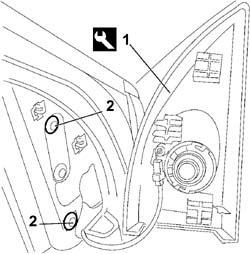
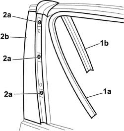

7005E50 FRONT SIDE DOOR PILLAR TRIM (ONE) LH OR RH - R.R.
- Path
- Procedures > 70 FITTINGS > 7005 PASSENGER COMPARTMENT FRONT SIDE DOORS > 7005E FRONT DOOR TRIM > 7005E50 FRONT SIDE DOOR PILLAR TRIM (ONE) LH OR RH - R.R.
- Kind
- repair procedure (removal / refitting; the operation number is the code)
- Applies to
- all engines; all production periods
- Interactive page
- https://sloeber94.github.io/elrnDB-fCrm/en/#/194000870
Applies to: all engines; all production periods
 Removing
Removing
 Refitting
Refitting- Open the front side door.
- Completely lower the window.
- Turn the ignition key to the OFF position.
- Disconnect the negative battery terminal.
Description | Connector | |
|---|---|---|
BATTERY |
1. Release the corner cover using the special tool without removing it and without disconnecting the tweeter electrical connection.
Tool | Description | Function | Validity |
|---|---|---|---|
1878077000 | Knife | Retainer removal |
2. Undo the fixing bolts and move the exterior rear view mirror to free up the work area.

Applies to: all engines; all production periods
Op. 7005D26 FRONT SIDE DESCENDING WINDOW GLASS SCRAPER (OUTER) (ONE), LEFT OR RIGHT- R.R
1. Release the outer casing (1a) as necessary and the lowering window channel (1b) from its housing until the pillar trim fixing bolts are accessible.
2. Undo the fixing bolts (2a) and remove the door pillar trim (2b).

Applies to: all engines; all production periods
Refitting
Removing- Fit the door pillar trim in place.
- Tighten the retaining bolts.
- Fit the lowering window channel checking that it adheres perfectly to the seat.
- Fit the outer casing in position.
Op. 7005D26 FRONT SIDE DESCENDING WINDOW GLASS SCRAPER (OUTER) (ONE), LEFT OR RIGHT- R.R
- Position the door mirror and tighten the fixing bolts.
- Fit the corner cover pressing in the areas of the retainers.
- Connect the negative battery terminal.
Description | Connector | |
|---|---|---|
BATTERY |